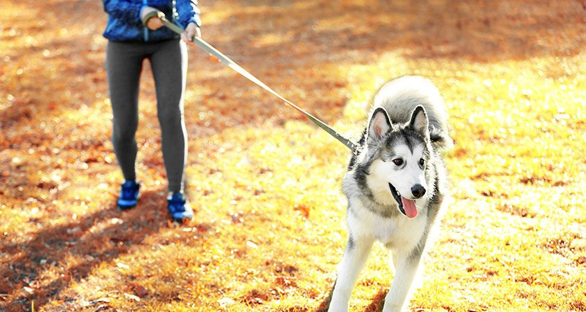
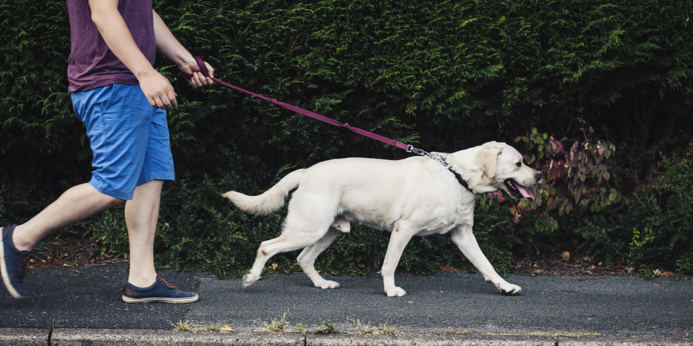
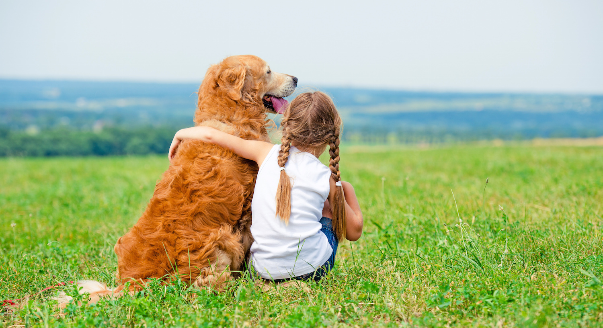
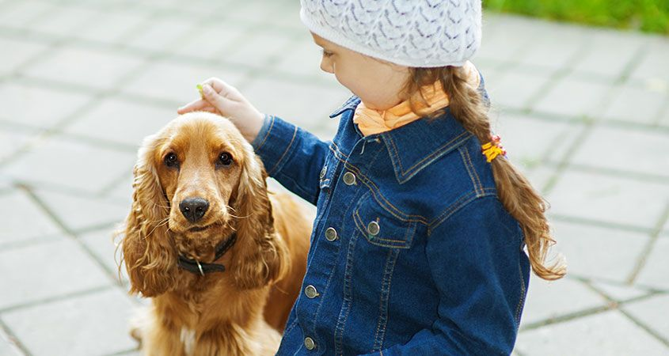

<ion-view view-title="<b>About us</b>">

  <ion-content>
	  <head>
		  <link rel="stylesheet" href="../css/style.css">
		  <link href="https://fonts.googleapis.com/css?family=Amatica+SC" rel="stylesheet" type="text/css">
	  </head>
    <body>

    <!-- Slideshow -->
		<div class="fadein">
		  
		  
		  
		  
		</div>

		<div class="aboutCompany">
			<b>Natural Apptitude Ltd</b> is a software company based in Bristol.<br><br>
			We specialise in making bespoke smartphone apps in the fields of ecology, biology and medicine. <br> <br>

			So far we have released a wide range of mobile applications that help our community to preserve nature and to become more aware of the fauna and flora surrounding us. Some of the company’s apps are BeeMap, MoorMoss, RiverObstacles and iRecord Grasshoopers. They all try to address and help to solve problems related to our environment. <br> <br>

			One of the current problems in the UK that many take not seriously enough is <b>dog waste</b>. Although there are a lot of people who clean up after their dogs, there are also these dog owners who do not take it as earnestly since anyway dogs’ poo does not stay forever and will eventually disappear naturally. However, this creates not only a great inconvenience for a big part of the community but also poses substantial health risk to young children. Thus, the need for an app that would deal with this problem...
		</div>

	<div class="wrapper">
		<button class="button-link" ng-click="shareAnywhere()">Share with friends</button>
		<button class="button-link" ng-click="goToProjectsPage()">Check out our other projects!</button>
	</div>

	</body>
  </ion-content>

</ion-view>
